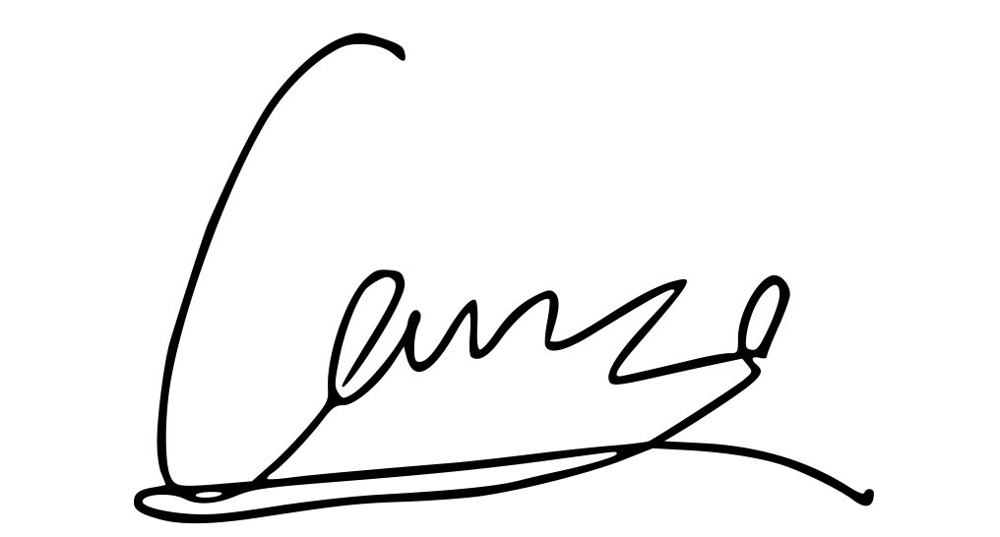

Software development is a creative craft, and I see myself as a masterful artist, weaving brilliance with every stroke of code. - Carson Wu, the Extraordinary Developer.
I am Carson Wu, a talented young prodigy from Hong Kong specializing in the fascinating fields of Artificial Intelligence (AI) and Machine Learning (ML). Despite the perceived complexity of software development, I approach it with a mindset of awe and imagination, considering each line of code as a stroke of brilliance I use to create extraordinary things.
From a young age, I became enthralled by technology and its boundless possibilities. Fueled by curiosity and determination, I immersed myself in the enchanting world of AI and ML, eager to unravel their mysteries and harness their immense potential. What began as a hobby swiftly transformed into a fervent passion, driving me to push boundaries and explore the frontiers of these cutting-edge technologies.
Despite my youth, I have developed a profound understanding of AI and ML concepts, algorithms, and tools. My programming skills have been honed, and I have attained proficiency in languages like Python, Java, and C#, as well as frameworks such as TensorFlow, PyTorch, and OpenCV. Through dedicated self-study and active engagement within online communities, I have gained hands-on experience in developing AI models, training neural networks, and utilizing data to extract meaningful insights.
My projects have spanned a wide spectrum, including image recognition, natural language processing, predictive analytics, and recommendation systems. I am captivated by the transformative power of AI and ML to revolutionize industries, tackle intricate problems, and enrich human lives. Continuously seeking opportunities to apply my knowledge and expertise to real-world challenges, I am driven to make a tangible impact on the world.
Beyond my technical prowess, I am an inquisitive and adaptable learner. I embrace challenges with a growth mindset, fearlessly exploring new concepts and conquering obstacles. Recognizing the value of collaboration and effective communication, I relish the opportunity to collaborate with like-minded individuals, exchanging ideas and collectively pushing the boundaries of innovation.
As I embark on my journey as a world-class developer specializing in AI and ML, I remain committed to perpetual learning and evolution. The future possibilities and potential of these technologies to shape our world in profound ways fill me with excitement. With every project, I aspire to leave an indelible impression, unveiling the brilliance of AI and ML through my meticulously crafted code.
If you are seeking a young, talented enthusiast in the realms of AI and ML to contribute to your projects, I would be thrilled to collaborate with you. Together, let us paint a future where the possibilities of AI and ML are fully realized, and where brilliance radiates from every line of code.
| Name | Carson Wu |
|---|---|
| Chinese name | 胡梓燊 |
| Age | |
| Born | Wu Tsz San Carson 25 November 2010 Hong Kong |
| Epistemology of Love | Romantic view of love: This view of love emphasizes romance, passion, and attraction. People believe that love
is a intense emotional experience and value romantic expressions and sparks of love. Sacred view of love: This view of love considers love as a sacred force that transcends personal feelings and worldly factors. People believe that love is a sacred connection and value the union of spirit and emotions. |
| Favorite botanical | Lavandula stoechas |
| Favorite color |
Dark Purple Hex: #872B8D RGB: (135, 43, 141) |
| Favorite creature | Felis catus domesticus (The Ragdoll) |
| Fields | Computer Science |
| Gender | Male |
| MBTI | ENFJ-A |
| Religion | Atheism |
| Sexual orientation | Bisexuality, demisexuality |
| Signature |  |
| Zodiac Sign | Sagittarius |